BankSim Demo Plots
Shaded regions mark the settlement tail after new client requests stop.
Bank reserves over time
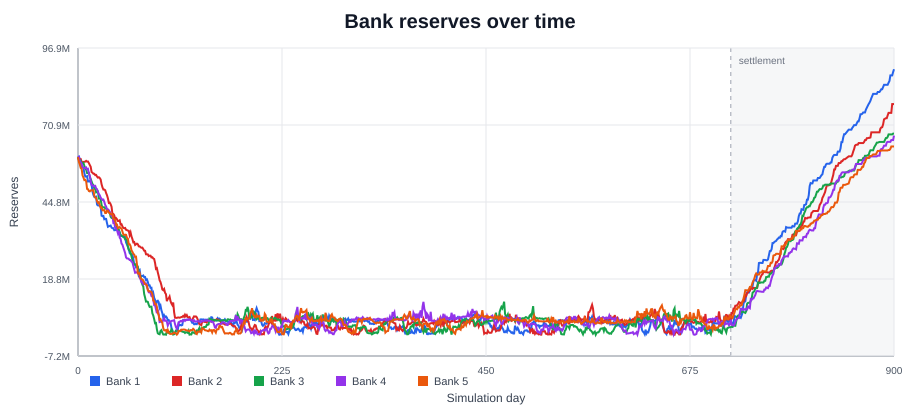
System reserves over time
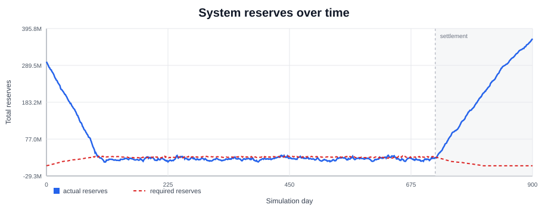
System liquidity buffer over time
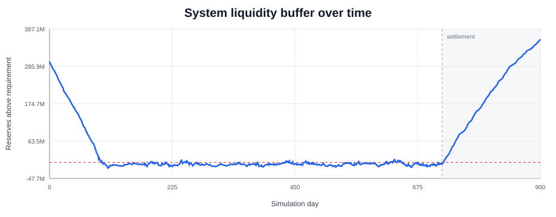
System balance sheet
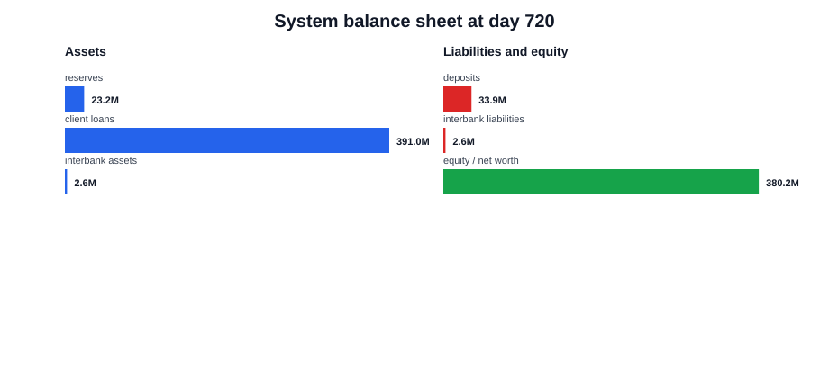
Client loan volume over time
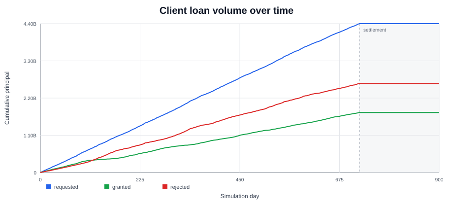
Rolling client loan volume
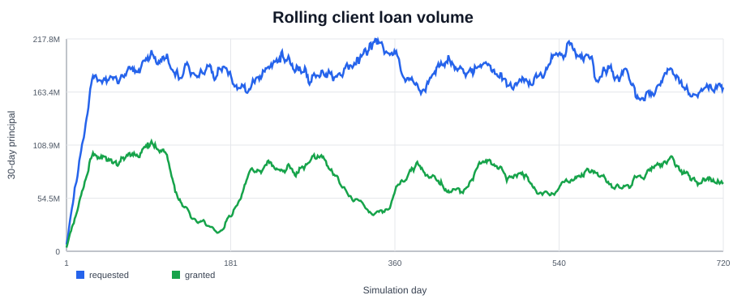
Client loan requests: 8435, granted: 3664, rejected: 4771. Requested volume: 4.40B, granted: 1.77B, rejected: 2.62B.
Rejected client loans by reason
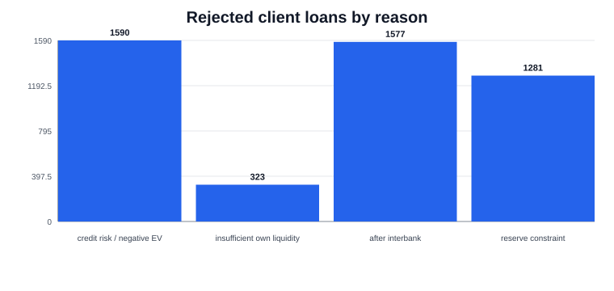
Rolling loan acceptance rate
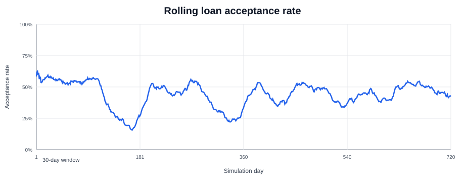
Rolling acceptance rate vs liquidity buffer
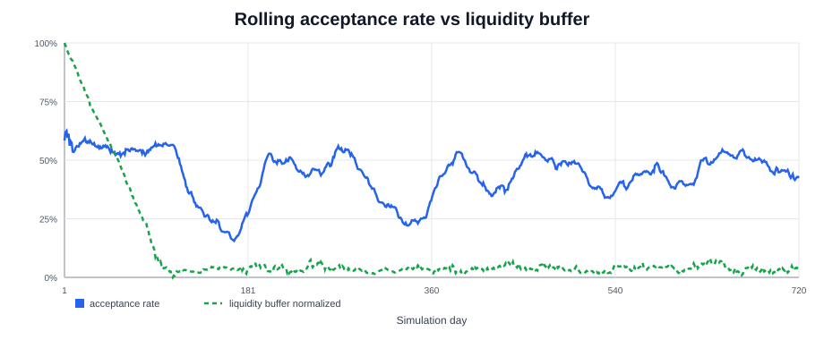
Client loan repayment outcomes by value
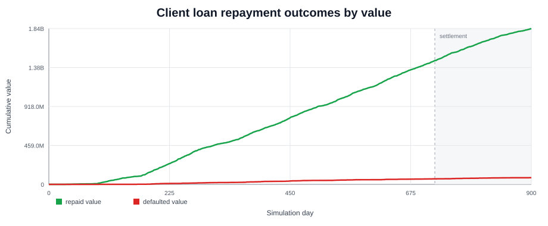
Interbank lending matrix
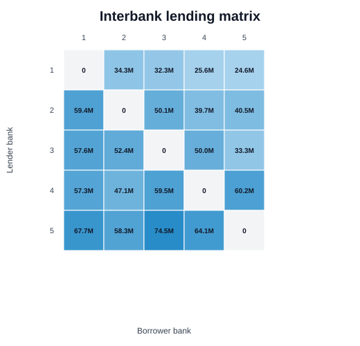